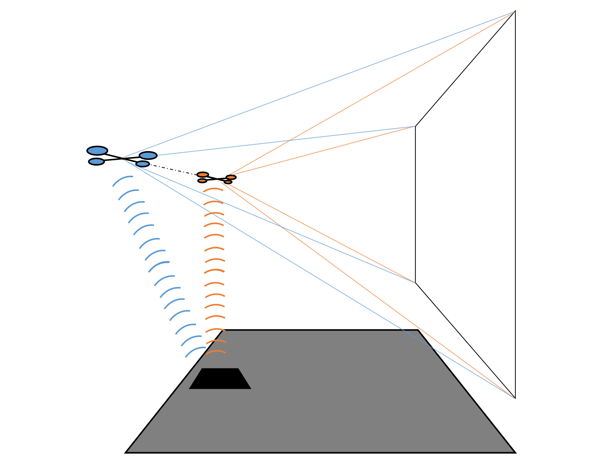

Abstract
We design and implement a 3D film-making system in which the left and right perspectives are shot from independent unmanned aerial vehicles (UAVs), thereby producing a stereo vision system with a dynamically variable baseline and elevated perspective. This system allows for novel visual effects due to the amplified depth perception achieved from the wide baseline. Furthermore “shrinking” and “growing” effects are achievable by dynamically varying the baseline. Our designs are motivated by research into human stereopsis and existing work in computer vision. We discuss our UAV platform design, techniques for UAV control and synchronization, current progress in enhancing vehicle state estimation through vision-based UAV localization, and our video stabilization pipeline. We achieve video that is comfortably viewable and lay the groundwork for further system enhancements.
Vidoes
Formation Flight Test
Autonomous UAV flight test showcasing "moving apart" formation. Landing is manually controlled.
3D Footage (No Stabilization)
Raw stereo footage in anagplyh form with NO video post-processing.
3D Footage
Stereo footage in anagplyh form WITH video post-processing (sensor fusion, state estimation, camera frame corrections).